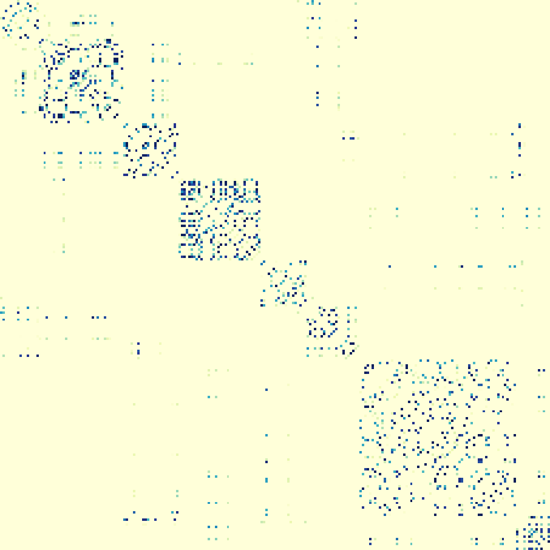

Spatio-Temporal Graph Convolutional Networks: A Deep Learning Framework for Traffic Forecasting
[arxiv] traffic-forecastinggraph-neural-networksspatio-temporal-learningtime-series-predictiondeep-learning
Spatio-Temporal Graph Convolutional Networks: A Deep Learning Framework for Traffic Forecasting
Authors: Bing Yu, Haoteng Yin, Zhanxing Zhu Year: 2018 Tags: traffic-forecasting, graph-convolutional-networks, spatio-temporal-learning, time-series, spectral-graph-theory, deep-learning
TL;DR
STGCN replaces RNN-based temporal modeling with gated 1-D causal convolutions and combines them with spectral graph convolutions in a "sandwich" ST-Conv block, yielding a fully convolutional architecture for traffic speed forecasting on road graphs. The design eliminates sequential training dependencies, achieving ~14× training speedup over graph-RNN baselines while outperforming them on two real-world datasets across 15/30/45-minute prediction horizons.
First pass — the five C's
Category. Research prototype — novel deep learning architecture evaluated empirically on real-world datasets.
Context. Traffic forecasting / graph deep learning subfield. Builds directly on: Defferrard et al. 2016 (ChebNet — localized spectral graph convolutions reducing cost to O(K|E|)); Kipf & Welling 2016 (1st-order GCN approximation); Gehring et al. 2017 (fully convolutional sequence-to-sequence learning with GLU); Li et al. 2018 (DCRNN — the primary competing graph+RNN baseline).
Correctness. Load-bearing assumptions: (1) road network topology is fixed, known, and adequately encoded by a distance-thresholded Gaussian adjacency matrix; (2) spectral graph convolution is valid (requires a fixed, undirected graph with a stable Laplacian); (3) purely causal 1-D convolution suffices to capture temporal dependencies without recurrence; (4) weekday-only data is representative. All appear reasonable for highway sensor data but may not hold for dynamic or directed urban networks.
Contributions. - First architecture to use only convolutional structures (no RNN) for spatio-temporal forecasting on graph-structured traffic data. - ST-Conv block: sandwich design of two gated temporal convolution layers around one spectral graph convolution layer, with residual connections and a bottleneck channel strategy. - ~14× training speedup over GCGRU on PeMSD7(M) (272 s vs. 3,825 s) with fewer parameters (4.54×10⁵ vs. ~2/3 more in GCGRU; >95% fewer than FC-LSTM). - Consistent best performance across MAE/MAPE/RMSE at all three prediction horizons on both datasets, with significance reported at α = 0.01 (two-tailed T-test).
Clarity. Mathematical derivations (Sections 2–3) are well-structured and precise; the experimental section is thin on ablation details and does not fully explain the multi-horizon prediction mechanism relative to the single-step loss stated in Eq. 9.
Second pass — content
Main thrust: Replacing recurrent units with gated 1-D temporal convolutions in a graph-CNN architecture yields a parallelizable, parameter-efficient model that captures spatio-temporal traffic dependencies more accurately and ~10–14× faster than comparable graph-RNN models.
Supporting evidence: - STGCN(Cheb) on PeMSD7(M): MAE 2.25 / 3.03 / 3.57 (km/h implied) at 15 / 30 / 45 min vs. GCGRU 2.37 / 3.31 / 4.01; RMSE 4.04 / 5.70 / 6.77 vs. 4.21 / 5.96 / 7.13. - STGCN(Cheb) on PeMSD7(L): MAE 2.37 / 3.27 / 3.97 at 15 / 30 / 45 min vs. GCGRU 2.48 / 3.43 / 4.12 (half batch size due to GPU memory overflow). - Training time on PeMSD7(M): STGCN(Cheb) 272 s, STGCN(1st) 271 s, GCGRU 3,825 s; on PeMSD7(L): 1,927 s, 1,554 s, 19,512 s respectively. - STGCN parameter count: 4.54×10⁵, approximately two-thirds of GCGRU and >95% fewer than FC-LSTM. - All improvements pass two-tailed T-test at α = 0.01, P < 0.01.
Figures & tables: - Figure 2 (architecture diagram): clearly annotated with layer types and channel sizes; central to understanding the ST-Conv block structure. - Figure 3 (sensor map + adjacency heatmap): sensor map informative; adjacency matrix heatmap lacks axis tick labels identifying stations. - Figure 4 (speed prediction time series): y-axis labeled (km/h), x-axis as time of day; qualitative only, no confidence intervals; cherry-picked rush-hour windows. - Figure 5 (RMSE vs. training time; MAE vs. epochs): axes labeled, no error bands; training time axis terminates at 4,000 s, cutting off GCGRU convergence — the GCGRU curve appears to still be descending at the plot boundary. - Tables 1 & 2: comprehensive multi-metric, multi-horizon results; no standard deviations or confidence intervals reported per cell beyond the aggregate T-test claim. GCGRU asterisked results on PeMSD7(L) are not treated as a separate caveat in the analysis.
Follow-up references: - Li et al. 2018 (DCRNN, ICLR) — primary competing graph-RNN baseline; directional diffusion convolution extends the spatial modeling. - Defferrard et al. 2016 (ChebNet, NIPS) — spectral graph convolution foundation underlying STGCN(Cheb). - Kipf & Welling 2016 — 1st-order GCN approximation used in STGCN(1st); context for the linear graph filter simplification. - Gehring et al. 2017 (ConvS2S) — direct inspiration for replacing RNNs with gated temporal convolutions.
Third pass — critique
Implicit assumptions: - Graph topology is static throughout training and inference; in practice, road closures or sensor failures alter the graph. - Euclidean distance between sensors (σ² = 10, ε = 0.5) adequately represents traffic flow dependencies — not validated; tuned as thresholds but sensitivity analysis is absent. - The 1st-order GCN approximation assumes λ_max ≈ 2, which holds for normalized Laplacians but is asserted rather than verified on these specific graphs. - Undirected graph assumption for PeMSD7: highway traffic has directional flow; symmetrizing the adjacency matrix discards directional information that DCRNN captures via diffusion. - Single-step L2 loss (Eq. 9) is stated, yet experiments report 15/30/45-min (3/6/9-step) forecasts — the mechanism bridging single-step training to multi-step evaluation is not explained and could indicate iterative rollout with error accumulation, contradicting a stated advantage over RNNs.
Missing context or citations: - No discussion of WaveNet-style dilated causal convolutions for temporal modeling, which would be a natural alternative to the uniform-width temporal convolution used here. - DCRNN (Li et al. 2018) uses directed diffusion and an encoder-decoder structure; the paper does not fully engage with why undirected spectral convolution should suffice vs. directed diffusion. - No comparison with attention-based spatial models (relevant even in early 2018). - No ablation isolating spatial vs. temporal module contributions independently — it is impossible to determine how much gain comes from graph structure vs. replacing RNN with CNN.
Possible experimental / analytical issues: - PeMSD7 station selection is random (228 and 1,026 from >39,000 stations); random seed is not reported, making exact replication impossible and raising concern that results are seed-sensitive. - GCGRU on PeMSD7(L) used half the batch size due to GPU memory limits, degrading its training quality; reported results marked with "*" are compared directly to STGCN without adjustment or re-run on equivalent hardware. - BJER4 has only 12 road segments — an extremely small graph where any spatial modeling advantage would be minimal; results on this dataset are the weakest differentiator. - No ablation over: (a) GLU gating vs. plain ReLU temporal conv, (b) bottleneck channel compression, (c) residual connections, (d) layer normalization, (e) number of ST-Conv blocks. - Missing value imputation via linear interpolation may introduce spurious patterns; imputation quality is not assessed, and imputation rate is not reported. - Training/test split details for PeMSD7 ("same principles as BJER4") are underspecified — validation set size and exact split ratio are not given. - STGCN configuration (64-16-64 channels) appears fixed across all three datasets without justification; grid search scope is not reported.
Ideas for future work: - Add a rigorous ablation: remove graph convolution entirely (use identity adjacency), swap GLU for ReLU, and remove residual/bottleneck separately to isolate each component's contribution. - Reformulate on directed graphs (e.g., asymmetric adjacency or diffusion operators) to test whether directionality improves highway forecasting over the symmetric spectral approach. - Replace fixed Gaussian distance adjacency with a learned or data-adaptive adjacency matrix and evaluate whether the fixed topology is the binding constraint on accuracy. - Clarify and formally evaluate the multi-step prediction mechanism: if iterative rollout is used, compare it directly to a seq2seq decoder to quantify accumulated error.
Figures from the paper

Methods
- spectral graph convolution
- Chebyshev polynomial approximation
- first-order graph convolution approximation
- gated temporal convolution
- gated linear units (GLU)
- spatio-temporal convolutional blocks
- layer normalization
- residual connections
- bottleneck strategy
- RMSprop optimization
Datasets
- BJER4
- PeMSD7(M)
- PeMSD7(L)
Claims
- STGCN outperforms state-of-the-art baselines including FC-LSTM and GCGRU on multiple real-world traffic datasets across all evaluated metrics.
- Using fully convolutional structures on the time axis instead of recurrent networks achieves approximately 14x faster training speed on PeMSD7(M).
- The spatio-temporal convolutional block jointly captures spatial and temporal dependencies from graph-structured time series without relying on recurrent units.
- STGCN requires fewer parameters than competing methods, using only about two-thirds as many parameters as GCGRU and saving over 95% compared to FC-LSTM.
- Modeling the traffic network as a graph and applying graph convolution directly enables more accurate mid-and-long term traffic forecasting than grid- or segment-based approaches.